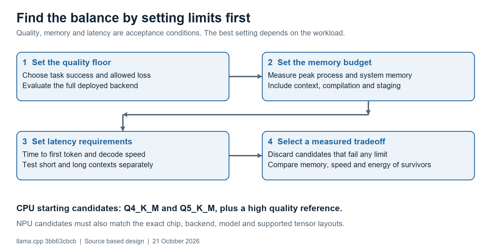
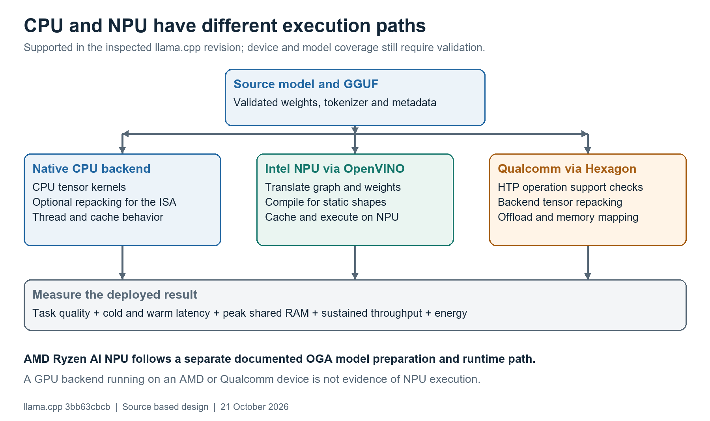

A practical supplement to the conversion and quantization guide
Your priorities: faster inference, lower memory use and preserved task quality. Based on llama.cpp revision 3bb63cbcb and official vendor documentation checked on 21 October 2026. Exact chip, model, RAM and operating system remain unspecified.
Start with a CPU baseline using Q4_K_M and Q5_K_M, then evaluate an NPU configuration supported by the target platform. Choose a configuration only after it meets a task quality floor, a measured memory limit, and separate prefill and decode latency targets. A format name or advertised NPU TOPS cannot establish that balance.
Figure 1. A selection method, not benchmark data. Define acceptable outcomes before choosing a quantization setting.

For lossy quantization, preserved quality should mean acceptable task results relative to the reference, not identical weights or identical text. Set critical-error checks plus a score tolerance on held-out examples. If you require exact numerical equivalence, lossy quantization is not a general solution.
For interactive work, separate time to first token from steady generation. For extraction or classification, measure time per completed result and correctness. Include cold starts if the application frequently unloads the model. Add energy per completed task if battery life or thermal limits matter.
This supplement contains recommended experiments and an explicitly hypothetical example. No model was run and no CPU or NPU performance figures were measured.
| Situation | First experiment | Why it can help |
|---|---|---|
| Model fits comfortably; quality is important | Compare Q5_K_M against Q4_K_M and Q8_0 or the float reference. | Spend more bytes only when the task score benefits enough. |
| Weights dominate memory and decode time | Compare Q4_K_M with Q5_K_M; test one smaller capable model. | Fewer weight bytes may reduce memory traffic. A smaller model can change capability more than a quant change. |
| Long conversations dominate memory | Keep weight format fixed; test necessary context capacity and supported KV cache types. | Weight quantization does not compress the KV cache automatically. |
| Narrow tasks such as extraction | Test a task-suitable small model at moderate precision. | A smaller model may satisfy the task with less RAM and latency; validate domain and language coverage. |
| Complex reasoning or code tasks | Compare model sizes using task success, then quantize each independently. | Higher precision cannot supply capabilities absent from a smaller base model. |
| Intermittent or short requests | Include load and startup time, and compare keeping the model resident. | A warm decode benchmark can hide most of the real response time. |
1. Build for the actual CPU. Use Release and the correct x86 or Arm instruction set. The native ggml CPU backend is the baseline; OpenVINO on CPU is a different execution backend and should be recorded as a separate candidate. Leave supported runtime repacking enabled initially. [1] [2]
2. Sweep threads. Test a few values up to the available physical cores. On mixed performance/efficiency-core CPUs, compare performance cores alone with broader placement. More threads can lose when bandwidth is saturated or synchronization dominates. Tune prompt-processing threads separately in tools exposing --threads-batch. [1] [3]
3. Tune the workload. Increase batch and microbatch for prefill only while memory and latency improve. Test decode at realistic context depths. Start with one request; concurrency can improve aggregate throughput while harming each user's latency.
4. Recheck quality. Test every weight and KV precision change. Use imatrix for suitable GGUF formats when calibration improves held-out quality. Do not assume Q8 cache or a lower-bit format always accelerates the CPU: kernel coverage and dequantization cost still matter.
Q4_K_M and Q5_K_M are sensible candidates, not universal winners. Also compare Q4_0 or IQ4_NL where the target CPU has efficient kernels. Generate each candidate from the same high precision source, rather than requantizing a previous candidate. [4]
Figure 2. Execution routes. Sources: CPU repacking code, OpenVINO and Hexagon code, and AMD's official runtime documentation [2, 5-9].

| Platform | Practical route | What must be checked |
|---|---|---|
| Intel Core Ultra NPU | llama.cpp OpenVINO backend. | Exact model, runtime and driver; static shapes; runtime tensor conversions; actual task quality. |
| Qualcomm Hexagon NPU | llama.cpp Hexagon / HTP backend. | Chip and SDK, supported operations and layouts, offload coverage, mapping overhead and deployment requirements. |
| AMD Ryzen AI NPU | Official OGA preparation and runtime path. | Supported model family and SDK-specific artifact. The documented llama.cpp route is for iGPU, not the NPU. |
A single CPU/NPU system often shares physical RAM. Offloading does not create extra memory capacity. Repacked weights, compiled graphs, staging buffers and retained source mappings can increase the memory peak even when the file is small. Measure total system pressure as well as process counters; avoid counting the same shared pages twice.
Do not assume a format supported by one NPU is equally efficient on another. In this checkout Hexagon's matrix support includes Q4_0, IQ4_NL, Q4_K, Q5_K and Q6_K among other types, with shape, stride and layout checks. Older claims that Hexagon is limited to Q4_0 do not describe this source. [7]
This backend can alter weight representations at load time. The NPU path generally requantizes relevant Q6_K tensors to a symmetric 4-bit layout with groups of 128; token embedding and output tensors have special cases. Consequently, a Q5_K_M or Q4_K_M filename does not promise that its original mixed precision is retained during NPU execution. Evaluate quality on the NPU itself. [5] [6]
Begin with a validated model, one sequence, and an explicit context such as 1024 or 2048 tokens if it covers the workload. This revision documents stateless NPU execution, a fixed prefill chunk default of 256, no multiple parallel sequences, and perplexity batches of 512 or smaller. Its validation table includes unsupported models and accuracy issues; compilation success alone is not a quality result. [5]
Test Q4_0 and Q4_K_M for a supported model before assuming a higher-bit preset is better. Keep the NPU plugin cache in a persistent local directory and measure cache-miss and cache-hit launches separately. GGML_OPENVINO_COMPILED_MODEL_CACHE_ONLY is documented for dynamic CPU/GPU graphs; it is not the NPU caching recipe. [5] [10]
Use the reported HTP device and confirm actual offloaded work in logs. Matrix format support is only one part of compatibility; other operations or layouts can prevent full offload. Host work, synchronization and transfers can erase the arithmetic gain from NPU execution. [7] [8]
The Snapdragon guide describes about 3.5 GB of virtual address space per NPU session, with dynamic mapping for larger models. This is an address-space constraint, not a claim that the device has only 3.5 GB of physical RAM. Multiple virtual sessions can reduce remapping overhead, but require measurement; they do not multiply physical RAM or arithmetic capacity. [8]
For native Snapdragon Windows deployment, this checkout documents signed HTP libraries and a development signing workflow. Account for that deployment requirement when selecting a platform. No driver, certificate, boot or system security configuration was changed for this analysis. [11]
AMD's current documentation separates NPU deployment through ONNX Runtime GenAI from the llama.cpp iGPU route. Its model preparation includes quantization plus runtime-specific export/postprocessing and restricts supported architectures. Treat an AMD NPU trial as a separate deployment experiment using the same tasks, not as a drop-in GGUF setting. [9] [12]
It is a stronger candidate when the supported model and shapes cover your workload, the model stays resident, enough requests amortize setup, and measured sustained latency or energy improves. CPU is a stronger candidate when compatibility, cold-start cost, changing shapes, long context or memory overhead outweighs the NPU gain. These are selection criteria, not performance guarantees.
Stage 1: choose one task-suitable model and a reference; measure native CPU Q4_K_M and Q5_K_M with the same prompts. Stage 2: tune threads and prompt batching on the winning CPU candidate. Stage 3: compare the relevant NPU route. Stage 4: tune context and supported KV types separately, then repeat task evaluation.
$cpu = ".\build\bin\Release" $model = "D:\models\model-Q4_K_M.gguf" & "$cpu\llama-bench.exe" -m $model -ngl 0 ` -p 512 -n 128 -t "2,4,8" -r 5 -o json ` > .\cpu-q4.json # Repeat at realistic populated context depth. & "$cpu\llama-bench.exe" -m $model -ngl 0 ` -p 0 -n 128 -d 2048 -t 4 -r 5 -o json ` > .\cpu-q4-depth2048.json
Choose thread values that exist on your CPU. Repeat for Q5_K_M, keeping the other settings fixed. Then sweep batch and microbatch for prefill. llama-bench excludes tokenization and sampling, so also measure the actual application. These examples are source-checked, not executed benchmarks. [1]
# Assumes a configured OpenVINO runtime and NPU driver. $ov = ".\build\ReleaseOV\bin" $env:GGML_OPENVINO_DEVICE = "NPU" $env:GGML_OPENVINO_STATEFUL_EXECUTION = "0" $env:GGML_OPENVINO_PREFILL_CHUNK_SIZE = "256" $env:GGML_OPENVINO_CACHE_DIR = "D:\models\ov-npu-cache" & "$ov\llama-cli.exe" --list-devices & "$ov\llama-cli.exe" -m $model -c 1024 ` -p "Explain why the sky appears blue."
Run in a dedicated shell so environment settings do not accidentally change later CPU experiments. Verify that the NPU is selected. When using llama-bench with this backend, enable Flash Attention using -fa on in this checkout; some README examples use the older numeric syntax. For NPU perplexity, use a compatible small batch such as -b 256 and matched context settings. [5]
Record cold load/compile time, warm time to first token, decode tokens/s, completed-task latency, process peak memory, system committed/available RAM and quality score. Repeat under the same power mode. Run a sustained workload to detect thermal throttling. If comparing battery efficiency, prefer system energy per completed correct task over an NPU-only utilization number.
Hypothetical decision example only. The following numbers are invented to explain the selection rule; they are not results for any model, quantization format, CPU or NPU. Assume a reference task score of 95/100. Your chosen limits are at most 2 points of score loss, peak memory at most 6 GiB, time to first token at most 2 seconds, and decode at least 20 tokens/s.
| Candidate | Task score | Peak GiB | TTFT s | Decode t/s | Decision |
|---|---|---|---|---|---|
| A | 90 | 4.2 | 1.2 | 26 | Quality fails |
| B | 93 | 5.0 | 1.4 | 23 | Meets all limits |
| C | 94 | 8.0 | 1.8 | 18 | Memory and speed fail |
| D | 84 | 3.0 | 0.9 | 31 | Quality fails |
B is the balanced choice for these limits, even though it is neither the smallest nor the fastest. If the allowed quality loss were zero, none would qualify. If several candidates qualify, remove any candidate that is worse in quality, memory and latency than another; choose among the remaining tradeoffs using the product's priority.
Total CPU time = CPU setup + requests * CPU time per request Total NPU time = NPU setup + requests * NPU time per request If NPU requests are faster, approximate break even requests: extra NPU setup time / time saved per request
For example, an extra 20 seconds of setup and 0.5 seconds saved per request imply about 40 requests to break even. These are illustrative numbers. If warm requests are not faster, setup amortization will not create a speed advantage. A persistent cache can change startup cost, so measure both cached and uncached launches.
At an assumed average of 5 bits per weight, 3 billion parameters occupy about 1.75 GiB and 7 billion about 4.07 GiB before caches and backend overhead. These are weight-only calculations, not predicted GGUF or process sizes. A supported smaller model may give a larger memory reduction than changing one quantization step, but its task capability must be tested.
For a conventional 32-layer GQA model with 8 KV heads, 128-dimensional keys and values, one sequence and F16 cache, 4096 retained tokens require about 512 MiB of KV data; 16384 require about 2 GiB. This excludes allocation overhead and does not apply unchanged to MLA, sliding-window, recurrent or hybrid architectures.
Choose a context size that covers the product requirement. Reducing context by dropping necessary information can lower task quality even when the weight quantization remains unchanged. If the target backend supports quantized KV, test its memory saving and quality separately from weight quantization.
The next platform decision needs the exact CPU/NPU SKU, RAM, operating system, model family and size, typical and maximum context, concurrency, and quality/latency limits. Without these, a universal winner would be a guess. Start with one CPU result and one supported NPU result on the same task set.
[1] Benchmark options and measurement scope
tools/llama-bench/README.md
[2] Native CPU tensor repacking
ggml/src/ggml-cpu/repack.cpp:5150
[3] Separate prompt processing threads
common/arg.cpp:1530
[4] Tensor precision policy and quantization
src/llama-quant.cpp:743
[5] Intel devices, precisions and known limitations
docs/backend/OPENVINO.md:38
[6] OpenVINO runtime requantization choices
ggml/src/ggml-openvino/ggml-openvino-extra.cpp:354
[7] Hexagon matrix support and operation checks
ggml/src/ggml-hexagon/ggml-hexagon.cpp:5390
[8] Snapdragon execution and session mapping
docs/backend/snapdragon/README.md
[10] Compiled graph cache scope
ggml/src/ggml-openvino/README.md
[11] Snapdragon Windows deployment requirements
docs/backend/snapdragon/windows.md
[9] AMD Ryzen AI software stack
AMD NPU and iGPU deployment routes
[12] Preparing OGA models
AMD quantization and postprocessing workflow
Intel also describes its llama.cpp backend in the OpenVINO release notes. Vendor support evolves; recheck the matrix for the actual runtime and chip used in the experiment.
All source-based claims are scoped to local commit 3bb63cbcbfb62056c84fe9e521b0f3d756d29c32. No inference, system configuration or repository source edits were performed for this supplement. The diagrams are original explanatory drawings; all performance values in the worked example are explicitly hypothetical.